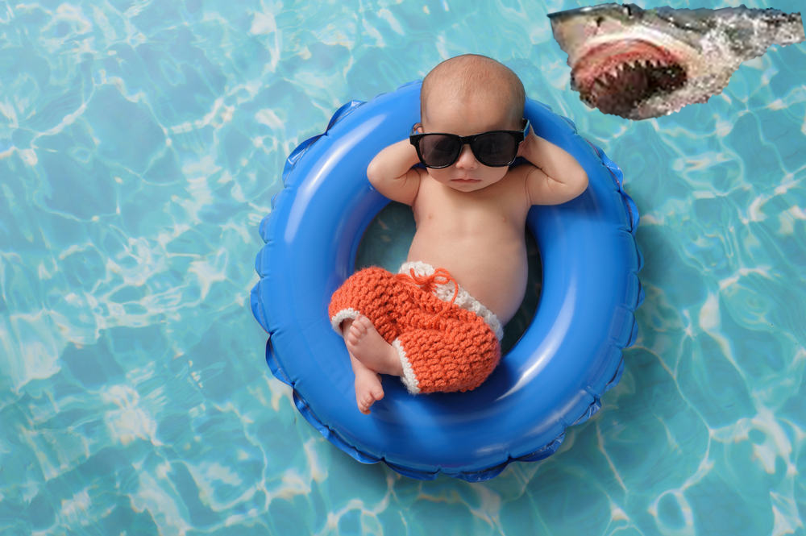
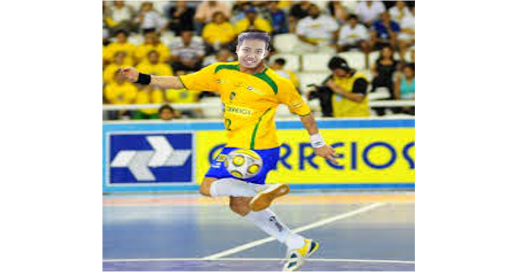

Perkenalkan nama lengkap saya Syukron Husnul Asrilyakin biasa dipanggil Syukron atau ucon. Saya adalah putra sulung dari 2 bersaudara. Ayah saya bernama Muhammad Asy'ari, berkerja sebagai pegawai negeri sipil. Ibu saya bernama Arina Bustam, berkerja sebagai pegawai swasta di bprs Amanah Ummah. Dan Adik saya Busyron yang masih duduk di kelas 2 SMP
Saya pertama kali masuk sekolah di tahun 2004 di Taman Kanak-kanak Insan Kamil Bogor, kemudian saya melanjutkan ke SDIT Insan Kamil Bogor pada tahun 2007-2013 kemudian saya melanjutkannya ke pesantren Darrul Ilmi .selama satu setengah tahun dan kemudian keluar dari pesantren karena banyaknya hafalan dan melanjutkan sekolah diSMPIT Al yasmin Dan kemudian melanjutkan sekolah lagi ke SMK-SMAKBogor, di SMK ini saya mengikuti ekstrakulikuler Karya Ilmiah Remaja. Saya mempunyai niat untuk melanjutkan Kuliah dari SMK-SMAK Bogor ke Universitas Indonesia.
Saya memiliki beberapa hobi,layaknya anak laki laki yang lain,yaitu menyukai sebuah permainan bola,seperti bermain sepak bola atau bermain futsal selain itu pula saya juga menyukai olahraga renang dan bermain game,sayangnya seluruh hobi yang saya punya saat ini sudah jarang saya kerjakan setelah saya bersekolah di SMAKBO di karenakan banyaknya tugas,laporan hasil praktikum,tugas persentasi dan makalah. Tetapi lain halnya jika sudah datangnya waktu libur.
 